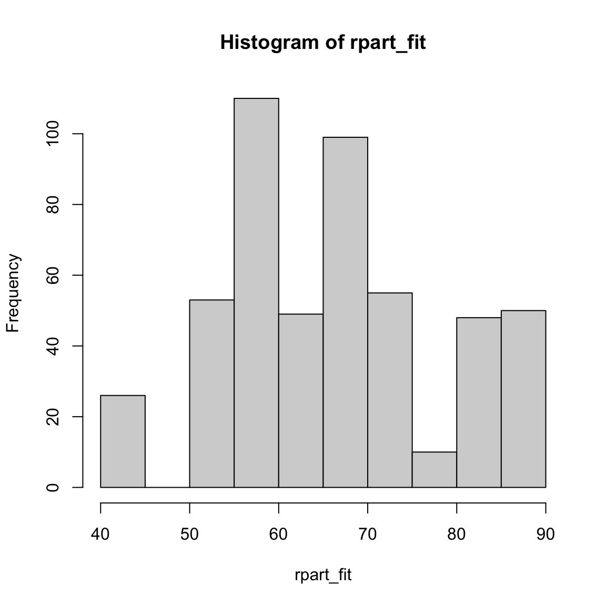
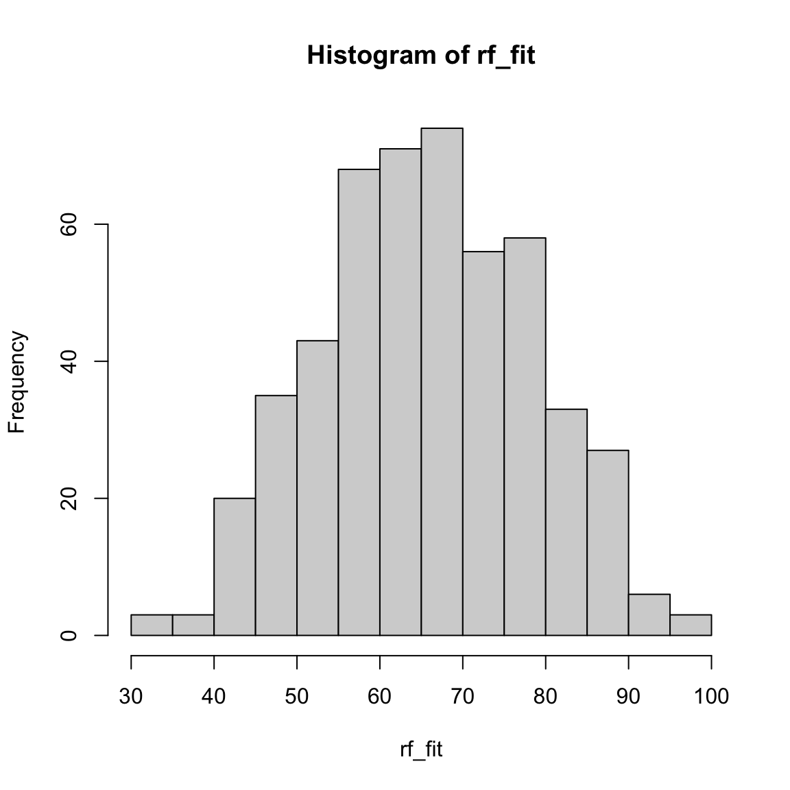

Predicting
|
Maschinelles Lernen mit R The R Bootcamp |

|
from Medium.com

Überblick
In diesem Practical wirst modellbasierte Vorhersagen generieren und die Modelle anhand der Qualität dieser messen.
Am Ende des Practicals wirst du wissen wie man…
- Regression, Decision tree, und Random forest an Trainingsdaten fitted.
- Modelle anhand der Traningsdaten und anhand der Testdaten evaluiert und vergleicht.
Aufgaben
A - Setup
Öffne dein
TheRBootcampR project. Es sollte die Ordner1_Dataund2_Codeenthalten. Stelle sicher, dass du alle Datensätze, welche imDatensätzeTab aufgelisted sind, in deinem1_DataOrdner hast.Öffne ein neues R Skript. Schreibe deinen Namen, das Datum und “Predicting Practical” als Kommentare an den Anfang des Skripts.
## NAME
## DATUM
## Predicting PracticalSpeichere das neue Skript unter dem Namen
predicting_practical.Rim2_CodeOrdner.Lade die Pakete
tidyverse,caret,party,partykit.
library(tidyverse)
library(caret)
library(party)
library(partykit)- Definiere wie zuvor ein
ctrl_noneObjekt mit dem wir im Traning die Samplingmethode aufnonesetzen. Erst in der nächsten Session beginnen wir dies zu ändern.
# Setze Samplingmethode auf none
ctrl_none <- trainControl(method = "none") Datensatz 1: College Abschlussraten
B - Lade die graduation Datensätze
- Verwende die
read_csv()Funktion um die Datensätzegraduation_train.csvundgraduation_test.csveinzulesen.
# Lese Daten ein
graduation_train <- read_csv(file = "1_Data/graduation_train.csv")
graduation_test <- read_csv(file = "1_Data/graduation_test.csv")Printe die Datensätze.
Verwende
names(XX),summary(XX), undView()um einen weiteren Überblick über die Daten zu bekommen.Wiederum, führe den Code unten aus um sicherzustellen, dass alle
characterFeatures als Faktoren vorliegen.
# Konvertiere alle character zu factor
graduation_train <- graduation_train %>%
mutate_if(is.character, factor)
graduation_test <- graduation_test %>%
mutate_if(is.character, factor)C - Fitting
Regression
- Verwende
train()um ein Regressionsmodell namensabschluss_glmzu fitten, das dieAbschlussrateals Funktion aller anderen im Datensatz enthaltenen Features vorhersagt. D.h.,…
- setze das
formArgument aufAbschlussrate ~ .. - setze das
dataArgument aufgraduation_train. - setze das
methodArgument aufmethod = "glm". - setze das
trControlArgument aufctrl_none(siehe oben).
abschluss_glm <- train(form = XX ~ .,
data = XX,
method = "XX",
trControl = ctrl_none)abschluss_glm <- train(form = Abschlussrate ~ .,
data = graduation_train,
method = "glm",
trControl = ctrl_none)- Exploriere
abschluss_glmindem duabschluss_glm$finalModelprintest undsummary()auf das Fit-Objekt anwendest. Wie beurteilst du die Outputs?
abschluss_glm$XX
summary(XX)abschluss_glm$finalModel
Call: NULL
Coefficients:
(Intercept) PrivatuniversitaetNein Bewerbungen
32.712812 -1.701840 0.001926
Angenommen Eingeschrieben Prozent_Top10
-0.001754 0.005550 -0.049727
Prozent_Top25 Vollzeit Teilzeit
0.206252 -0.001069 -0.001294
Kosten_ausserhalb Kosten_Unterkunft Kosten_Buecher
0.001782 0.000871 -0.000932
Kosten_persoenlich Prozent_PhD Prozent_Degree
-0.001457 0.104743 -0.101789
Verhaeltnis_Stud.Doz. Prozent_Spenden Kosten_Student
0.275943 0.219944 -0.000683
Degrees of Freedom: 499 Total (i.e. Null); 482 Residual
Null Deviance: 142000
Residual Deviance: 74600 AIC: 3960summary(abschluss_glm)
Call:
NULL
Deviance Residuals:
Min 1Q Median 3Q Max
-38.10 -7.24 -0.58 7.51 47.10
Coefficients:
Estimate Std. Error t value Pr(>|t|)
(Intercept) 32.712812 5.544068 5.90 6.8e-09 ***
PrivatuniversitaetNein -1.701840 2.114677 -0.80 0.42135
Bewerbungen 0.001926 0.000572 3.37 0.00082 ***
Angenommen -0.001754 0.001046 -1.68 0.09417 .
Eingeschrieben 0.005550 0.002872 1.93 0.05387 .
Prozent_Top10 -0.049727 0.086281 -0.58 0.56466
Prozent_Top25 0.206252 0.066972 3.08 0.00219 **
Vollzeit -0.001069 0.000461 -2.32 0.02068 *
Teilzeit -0.001294 0.000444 -2.92 0.00369 **
Kosten_ausserhalb 0.001782 0.000297 6.01 3.7e-09 ***
Kosten_Unterkunft 0.000871 0.000721 1.21 0.22790
Kosten_Buecher -0.000932 0.004089 -0.23 0.81988
Kosten_persoenlich -0.001457 0.000998 -1.46 0.14494
Prozent_PhD 0.104743 0.071027 1.47 0.14095
Prozent_Degree -0.101789 0.076321 -1.33 0.18293
Verhaeltnis_Stud.Doz. 0.275943 0.191423 1.44 0.15008
Prozent_Spenden 0.219944 0.061576 3.57 0.00039 ***
Kosten_Student -0.000683 0.000202 -3.39 0.00077 ***
---
Signif. codes: 0 '***' 0.001 '**' 0.01 '*' 0.05 '.' 0.1 ' ' 1
(Dispersion parameter for gaussian family taken to be 155)
Null deviance: 141641 on 499 degrees of freedom
Residual deviance: 74595 on 482 degrees of freedom
AIC: 3960
Number of Fisher Scoring iterations: 2- Mittels
predict()generiere die gefitteten Werte vonabschluss_glmund speichere sie alsglm_fitab.
# Speichere die gefitteten Werte
glm_fit <- predict(XX)glm_fit <- predict(abschluss_glm)- Printe
glm_fitund kriere ein Histogramm der Werte mittelshist(). Sind die Werte in einer plausiblen Region?
# Inspeziere die gefitteten Werte
XX
hist(XX)glm_fit[1:10] 1 2 3 4 5 6 7 8 9 10
71.8 56.4 91.8 62.9 69.2 68.5 57.4 52.0 57.4 71.0 hist(glm_fit)Decision Trees
- Verwende
train()um einen Decision Tree namensabschluss_rpartzu fitten, welcher dieAbschlussrateals Funktion aller anderen im Datensatz enthaltenen Features vorhersagt. D.h.,…
- setze das
formArgument aufAbschlussrate ~ .. - setze das
dataArgument aufgraduation_train. - setze das
methodArgument aufmethod = "rpart".. - setze das
trControlArgument auf yourctrl_none.. - setze das
tuneGridArgument aufcp = 0.01.
abschluss_rpart <- train(form = XX ~ .,
data = XX,
method = "XX",
trControl = XX,
tuneGrid = expand.grid(cp = XX)) abschluss_rpart <- train(form = Abschlussrate ~ .,
data = graduation_train,
method = "rpart",
trControl = ctrl_none,
tuneGrid = expand.grid(cp = .01))- Exploriere
abschluss_rpartindem duabschluss_rpart$finalModelprintest und mitplot(as.party(abschluss_rpart$finalModel))den Decision Tree plottest. Wie beurteilst du die Outputs?
abschluss_rpart$finalModeln= 500
node), split, n, deviance, yval
* denotes terminal node
1) root 500 142000 65.6
2) Kosten_ausserhalb< 1.06e+04 292 69000 58.0
4) Prozent_Top25< 47.5 135 34100 53.3
8) Kosten_ausserhalb< 8.56e+03 86 20000 48.9
16) Kosten_Student>=6.97e+03 26 6430 41.9 *
17) Kosten_Student< 6.97e+03 60 11700 52.0
34) Kosten_Buecher>=388 53 9310 50.0 *
35) Kosten_Buecher< 388 7 639 66.7 *
9) Kosten_ausserhalb>=8.56e+03 49 9520 61.1 *
5) Prozent_Top25>=47.5 157 29600 61.9
10) Prozent_Top10< 51.5 147 26100 61.0
20) Prozent_Spenden< 24.5 110 16700 58.9 *
21) Prozent_Spenden>=24.5 37 7500 67.2 *
11) Prozent_Top10>=51.5 10 1570 75.3 *
3) Kosten_ausserhalb>=1.06e+04 208 31500 76.4
6) Kosten_ausserhalb< 1.68e+04 158 21500 73.3
12) Prozent_Spenden< 22.5 55 8180 68.7 *
13) Prozent_Spenden>=22.5 103 11500 75.8
26) Vollzeit< 1.42e+03 55 4770 71.2 *
27) Vollzeit>=1.42e+03 48 4200 81.1 *
7) Kosten_ausserhalb>=1.68e+04 50 4040 85.9 *plot(as.party(abschluss_rpart$finalModel))- Mittels
predict()generiere die gefitteten Werte vonabschluss_rpartund speichere sie alsrpart_fitab.
# Speichere die gefitteten Werte
rpart_fit <- predict(XX)rpart_fit <- predict(abschluss_rpart)- Printe
rpart_fitund kriere ein Histogramm der Werte mittelshist(). Sind die Werte in einer plausiblen Region?
# Inspeziere die gefitteten Werte
XX
hist(XX)rpart_fit[1:10] 1 2 3 4 5 6 7 8 9 10
71.2 58.9 85.9 58.9 68.7 81.1 58.9 50.0 50.0 81.1 hist(rpart_fit)
Random Forests
- Verwende
train()um einen Random Forest namensabschluss_rfzu fitten, welcher dieAbschlussrateals Funktion aller anderen im Datensatz enthaltenen Features vorhersagt. D.h.,…
- setze das
formArgument aufAbschlussrate ~ .. - setze das
dataArgument aufgraduation_train. - setze das
methodArgument aufmethod = "rf". - setze das
trControlArgument aufctrl_none. - setze das
tuneGridArgument aufexpand.grid(mtry = 2).
abschluss_rf <- train(form = XX ~ .,
data = XX,
method = "XX",
trControl = XX,
tuneGrid = expand.grid(mtry = 2)) abschluss_rf <- train(form = Abschlussrate ~ .,
data = graduation_train,
method = "rf",
trControl = ctrl_none,
tuneGrid = expand.grid(mtry = 2)) - Mittels
predict()generiere die gefitteten Werte vonabschluss_rfund speichere sie alsrf_fitab.
# Speichere die gefitteten Werte
rf_fit <- predict(XX)rf_fit <- predict(abschluss_rf)- Printe
rf_fitund kriere ein Histogramm der Werte mittelshist(). Sind die Werte in einer plausiblen Region?
# Inspiziere die gefitteten Werte
XX
hist(XX)rf_fit[1:10] 1 2 3 4 5 6 7 8 9 10
68.7 64.1 85.5 55.9 75.9 66.8 57.8 43.4 58.0 73.0 hist(rf_fit)
Beruteile die Accuracy im Fitting
- Speichere das Kriterium im Trainingsdatensatz (
graduation_train$Abschlussrate) als eigenes Objekt mit dem Namencriterion_trainab.
# Speichere die Kriteriumswerte im Training
criterion_train <- XX$XXcriterion_train <- graduation_train$Abschlussrate- Verwende
postResample()um die Fitting Performanz der drei Modelle zu vergleichen. Setze hierfür dasobsArgument auf das eben erstelltecriterion_trainund daspredArgument auf die gefitteten Werte des jeweiligen Modells (z.B.glm_fit).
# Regression
postResample(pred = XX, obs = XX)
# Decision Tree
postResample(pred = XX, obs = XX)
# Random Forest
postResample(pred = XX, obs = XX)# Regression
postResample(pred = glm_fit, obs = criterion_train) RMSE Rsquared MAE
12.214 0.473 9.250 # Decision Trees
postResample(pred = rpart_fit, obs = criterion_train) RMSE Rsquared MAE
12.072 0.486 9.536 # Random Forests
postResample(pred = rf_fit, obs = criterion_train) RMSE Rsquared MAE
5.733 0.928 4.326 - Welches Modell hat den besten Fit?
D - Prediction Accuracy
- Verwende
predict()um für jedes Modell Vorhersagen für die Testdaten zu machen. Hierfür setzt du für dasnewdataArgument den gesamten Testdatensatzgraduation_testein. Speichere die Objekte alsglm_pred,rpart_predundrf_pred.
# Regression
glm_pred <- predict(XX, newdata = XX)
# Decision Trees
rpart_pred <- predict(XX, newdata = XX)
# Random Forests
rf_pred <- predict(XX, newdata = XX)# Regression
glm_pred <- predict(abschluss_glm, newdata = graduation_test)
# Decision Tree
rpart_pred <- predict(abschluss_rpart, newdata = graduation_test)
# Random Forest
rf_pred <- predict(abschluss_rf, newdata = graduation_test)- Speichere das Kriterium im Testdatensatz (
graduation_test$Abschlussrate) als eigenes Objekt mit dem Namencriterion_testab.
# Speichere die Kriteriumswerte des Testdatensatzes
criterion_test <- XX$XX# Speichere die Kriteriumswerte des Testdatensatzes
criterion_test <- graduation_test$Abschlussrate- Verwende wiederum
postResample()um nun die Vorhersage Performanz der drei Modelle zu vergleichen. Setze hierfür dasobsArgument auf das eben erstelltecriterion_testund daspredArgument auf die gefitteten Werte des jeweiligen Modells (z.B.glm_pred).
# Regression
postResample(pred = XX, obs = XX)
# Decision Trees
postResample(pred = XX, obs = XX)
# Random Forests
postResample(pred = XX, obs = XX)# Regression
postResample(pred = glm_pred, obs = criterion_test) RMSE Rsquared MAE
13.727 0.404 9.964 # Decision Trees
postResample(pred = rpart_pred, obs = criterion_test) RMSE Rsquared MAE
14.741 0.321 11.104 # Random Forests
postResample(pred = rf_pred, obs = criterion_test) RMSE Rsquared MAE
13.186 0.467 9.684 - Welches Modell zeigt die beste Vorhersageperformanz?
# Der Random Forest!- Vergleiche jeweils die Performanz der Modelle für Training und Test. In welchem Fall sind die Modelle schlechter? Welches Modell zeigt den grössten Unterschied?
# Der Fit der Regression blieb relativ konstant. Die Performanz des Random
# hat deutlich abgenommen.Datensatz 2: Hauspreise King County, Washington
E - Lade die house Datensätze
- Verwende die
read_csv()Funktion um die Datensätzehouse_train.csvundhouse_test.csveinzulesen.
# Lese Daten ein
house_train <- read_csv(file = "1_Data/house_train.csv")
house_test <- read_csv(file = "1_Data/house_test.csv")Printe die Datensätze.
Verwende
names(XX),summary(XX), undView()um einen weiteren Überblick über die Daten zu bekommen.Wiederum, führe den Code unten aus um sicherzustellen, dass alle
characterFeatures als Faktoren vorliegen.
# Konvertiere alle character zu factor
house_train <- house_train %>%
mutate_if(is.character, factor)
house_test <- house_test %>%
mutate_if(is.character, factor)F - Modelliere die house Daten
- Fitte eine Regression, einen Decision Tree und einen Random Forest für
house_train.csvwobei duPreisdurch alle anderen Features im Datensatz vorherzusagen versuchst.
# Regression
preis_glm <- train(form = Preis ~ .,
data = house_train,
method = "glm",
trControl = ctrl_none)
# Decision tree
preis_rpart <- train(form = Preis ~ .,
data = house_train,
method = "rpart",
trControl = ctrl_none,
tuneGrid = expand.grid(cp = .01))
# Random Forest
preis_rf <- train(form = Preis ~ .,
data = house_train,
method = "rf",
trControl = ctrl_none,
tuneGrid = expand.grid(mtry = 2))Exploriere die Objekte indem du
XX$finalModelinspizierst undsummary()anwendest.Verwende
predict()um jeweils für die drei Modelle die vorhergesagten Werte separat für den Trainingsdatensatz und für den Testdatensatz zu generieren. Kreiere also drei Objekte mit NamenXX_fitund drei Objekte mit NamenXX_pred.
# Gefittete Werte
glm_fit <- predict(preis_glm)
rpart_fit <- predict(preis_rpart)
rf_fit <- predict(preis_rf)
# Vorhergesagte Werte
glm_pred <- predict(preis_glm, newdata = house_test)
rpart_pred <- predict(preis_rpart, newdata = house_test)
rf_pred <- predict(preis_rf, newdata = house_test)- Speichere die Kriteriumswerte im Trainings- und Testdatensatz separat als
criterion_trainundcriterion_testab.
# Speichere die Kriteriumswerte
criterion_train <- house_train$Preis
criterion_test <- house_test$Preis- Verwende
postResample()um nun die Fitting und Vorhersage Performanz der drei Modelle zu vergleichen.
# Fitting
postResample(pred = glm_fit, obs = criterion_train) RMSE Rsquared MAE
651540 NA 536932 postResample(pred = rpart_fit, obs = criterion_train) RMSE Rsquared MAE
651540 NA 536932 postResample(pred = rf_fit, obs = criterion_train) RMSE Rsquared MAE
651540 NA 536932 # Prediction
postResample(pred = glm_pred, obs = criterion_test) RMSE Rsquared MAE
631672 NA 524818 postResample(pred = rpart_pred, obs = criterion_test) RMSE Rsquared MAE
631671 NA 524817 postResample(pred = rf_pred, obs = criterion_test) RMSE Rsquared MAE
631672 NA 524818 - Welches Modell hat die beste Performanz im Fit? Welches in der Vorhersage? Welches zeigt den grössten Unterschied zwischen Fit und Vorhersage?
# Random Forest!- Welches Modell würdet ihr nun für den Einsatz in der Praxis empfehlen? Und welche Vorhersagegenauigkeit ist in der Realität zu erwarten?
X - Challenges: Model Tuning Parameter
In allen Decision Trees wurde bisher der Komplexitätsparameter
cpauf0.01gesetzt. Probiere nun aus was passiert, wenn du etwas an ihm drehst. Setze ihn z.B. auf0.2und schaue dir dann an wie der Plot des Baums (plot(as.party(XX_rpart$finalModel))) sich verändert. Werden die Bäume komplizierter? Wie verändert sich Fit- und Vorhersageperformanz?In allen Random Forests wurde bisher der Paramater
mtryauf2gesetzt. Probiere nun aus was passiert, wenn du etwas an ihm drehst. Setze ihn z.B. auf5und beobachte wie sich Fit- und Vorhersageperformanz, sowie die Zeit, die für das Training des Modells beansprucht wird, verändern.
Beispiele
# Schritt 0: Pakete laden -----------
library(tidyverse)
library(caret)
library(partykit)
library(party)
# Schritt 1: Daten laden, aufbereiten und explorieren ----------------------
# Trainingsdaten und Testdaten
data_train <- read_csv("1_Data/mpg_train.csv")
data_test <- read_csv("1_Data/mpg_test.csv")
# Konvertiere character zu factor
data_train <- data_train %>% mutate_if(is.character, factor)
data_test <- data_test %>% mutate_if(is.character, factor)
# Speichere das Kriterium in Training und Test
criterion_train <- data_train$hwy
criterion_test <- data_test$hwy
# Schritt 3: Trainiere Modelle: -----------------------------
# Regression
hwy_glm <- train(form = hwy ~ year + cyl + displ,
data = data_train,
method = "glm",
trControl = trainControl(method = "none"))
# Inspiziere gefittete Regression
hwy_glm$finalModel
summary(hwy_glm)
# Decision Tree
hwy_rpart <- train(form = hwy ~ year + cyl + displ,
data = data_train,
method = "rpart",
trControl = trainControl(method = "none"),
tuneGrid = expand.grid(cp = .01))
# Inspiziere gefitteten Decision Tree
hwy_rpart$finalModel
plot(as.party(hwy_rpart$finalModel))
# Random Forests
hwy_rf <- train(form = hwy ~ year + cyl + displ,
data = data_train,
method = "rf",
trControl = trainControl(method = "none"),
tuneGrid = expand.grid(mtry = 2))
# Inspiziere gefitteten Random Forest
hwy_rf$finalModel
# Schritt 4: Evaluiere Fit: -----------------------------
# Speichere gefittete Werte
glm_fit <- predict(hwy_glm)
rpart_fit <- predict(hwy_rpart)
rf_fit <- predict(hwy_rf)
# Evaluiere fit
postResample(pred = glm_fit, obs = criterion_train)
postResample(pred = rpart_fit, obs = criterion_train)
postResample(pred = rf_fit, obs = criterion_train)
# Schritt 5: Evaluiere Vorhersage: -----------------------------
# Speichere vorhergesagte Werte
glm_pred <- predict(hwy_glm, newdata = data_test)
rpart_pred <- predict(hwy_rpart, newdata = data_test)
rf_pred <- predict(hwy_rf, newdata = data_test)
# Evaluiere fit
postResample(pred = glm_pred, obs = criterion_test)
postResample(pred = rpart_pred, obs = criterion_test)
postResample(pred = rf_pred, obs = criterion_test)Datensätze
| Datei | Zeilen | Spalten |
|---|---|---|
| graduation_train.csv | 500 | 18 |
| graduation_test.csv | 277 | 18 |
| house_train.csv | 5000 | 21 |
| house_test.csv | 1000 | 21 |
graduation_train und graduation_test
Die graduation_train und graduation_test Datensätze entstammen dem College Datensatz aus dem ISLR Paket. sie enthalten Statistiken für eine grosse Anzahl US Colleges auf Basis des US News and World Reports aus dem Jahr 1995.
| Name | Beschreibung |
|---|---|
| Privatuniversitaet | Ja oder Nein |
| Bewerbungen | Anzahl Bewerbungen |
| Angenommen | Anzahl angenommene Bewerbungen |
| Eingeschrieben | Anzahl eingeschrieben |
| Prozent_Top10 | Prozent der Studierenden innerhalb Top 10% in High School |
| Prozent_Top25 | Prozent der Studierenden innerhalb Top 25% in High School |
| Vollzeit | Anzahl Studierende in Vollzeit |
| Teilzeit | Anzahl Studierende in Teilzeit |
| Kosten_ausserhalb | Kosten für Studierende aus einem anderen Staat |
| Kosten_Unterkunft | Kosten für Studierende für Unterkunft und Verpflegung |
| Kosten_Buecher | Kosten für Studierende für Bücher |
| Kosten_persoenlich | Kosten für Studierende für Persönliches |
| Prozent_PhD | Anteil PhDs innerhalb der Dozentenschaft |
| Prozent_Degree | Anteil Abschlüsse innerhalb der Dozentenschaft |
| Verhaeltnis_Stud.Doz. | Verhältnis Studierene zu Dozenten |
| Prozent_Spenden | Anteil Alumnis, die an das College spenden |
| Kosten_Student | Ausbildungskosten für das College pro Student |
| Abschlussrate | Abschlussrate |
house_train and house_test
Die house_train und house_test Datensätze enthalten Hauspreise und -Eigenschaften in der King County in den USA, welches die Stadt Seattle beinhaltet. Quelle der Daten ist Kaggle.
| Name | Beschreibung |
|---|---|
| Preis | Preis des Hauses |
| Schlafzimmer | Anzahl Schlafzimmer |
| Baeder | Anzahl Bäder |
| Gesamt_sqft | Gesamtfläche des Hauses in square foot |
| Grundstück_sqft | Fläche des Grundstücks in square foot |
| Stockwerke | Anzahl Stockwerke |
| Uferlage | 0 = Nein, 1 = Ja |
| Besichtigung | Wurde das Haus besichtigt |
| Zustand | Wie gut ist der Zustand des Hauses |
| Einstufung | Einstufung gemäss King County Einstufungssystem |
| Wohnraum_sqft | Wohnraum des Hauses in square foot |
| Keller_sqft | Kellerraum des Hauses in square foot |
| Baujahr | Baujahr |
| Renovationsjahr | Renovationsjahr |
| Postleitzahl | Postleitzahl |
| Breitengrad | Breitengrad |
| Laengengrad | Längengrad |
| Gesamt_sqft_2015 | Gesamtfläche des Hauses in square foot in 2015 |
| Grundstück_sqft_2015 | Fläche des Grundstücks in square foot in 2015 |
Funktionen
Pakete
| Paket | Installation |
|---|---|
tidyverse |
install.packages("tidyverse") |
caret |
install.packages("caret") |
partykit |
install.packages("partykit") |
party |
install.packages("party") |
Funktionen
| Funktion | Paket | Beschreibung |
|---|---|---|
trainControl() |
caret |
Definiere wie das Modell trainiert wird |
train() |
caret |
Trainiere (fitte) ein Modell |
predict(object, newdata) |
stats |
Vorhersage des Kriteriumswerts in newdata |
postResample() |
caret |
Evaluiere Performanz in Regressionsfällen |
confusionMatrix() |
caret |
Evaluiere Performanz in Klassifikationsfällen |
Materialien
Cheatsheet
from github.com/rstudio